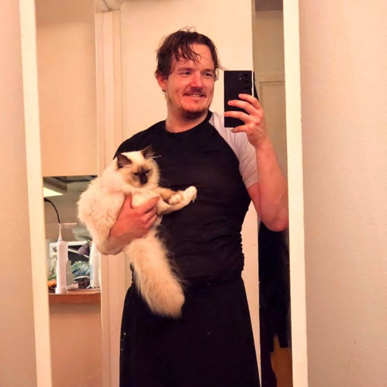

Datamalli.fi on suomenkielinen opas datan mallinnukseen ja AI-valmiiseen dataan. Sivusto kokoaa käytännönläheistä tietoa tietomalleista, arkkitehtuureista, hallintakäytännöistä ja BI-kehittämisestä ilman turhaa jargonia. Tavoitteena on auttaa BI-kehittäjiä ja analytiikan parissa työskenteleviä rakentamaan ylläpidettäviä, suorituskykyisiä ja AI-aikaan valmiita tietomalleja.

Sivuston rakentaja ja ylläpitäjä on yli 10 vuoden analytiikka- ja konsulttikokemuksen omaava Dataneuvoksen (Datamalli Tiimi Oy) toimitusjohtaja ja perustaja Samu Lahdenperä.
Samu on ratkaisukeskeinen, korkean tason BI-kehittäjä, joka on erikoistunut datan demokratisointiin, laajojen tietomallien rakentamiseen ja optimointiin sekä liiketoiminnan tarpeiden kääntämiseen ylläpidettäviksi teknisiksi ratkaisuiksi.
Diplomi-insinööri (tuotantotalous) LUT-yliopistosta, erikoistumisalueena data-analytiikka päätöksenteossa.
Samu on tehnyt BI-kehitystyötä vuodesta 2016 alkaen ja toiminut yrittäjänä Dataneuvoksen (Datamalli Tiimi Oy) kautta vuodesta 2022. Yli kahdeksan vuoden aikana hän on johtanut tietomallinnusprojekteja organisaatioissa, joiden datamäärät vaihtelevat sadoista miljoonista riveistä useampaan miljardiin.
Yleisradiolla Samu toimi Power BI Lead -roolissa, jossa hän vastasi koko organisaation BI-arkkitehtuurista ja useiden tiimien tietomallien laadusta. Keusotessa hän toimi BI Lead -roolissa kehittäen terveydenhuollon analytiikkaratkaisuja vaativaan sote-ympäristöön. Loihde Analyticsilla, Destialla ja Postilla hän on toiminut asiantuntijaroolissa vastaten tietomallinnuksen, DAX-kehittämisen ja Microsoft Fabric -käyttöönoton kokonaisuuksista.
Dataneuvos-yrityksensä kautta Samu toimii nykyisin itsenäisenä konsulttina, auttaen suomalaisia organisaatioita rakentamaan laadukkaita, skaalautuvia ja AI-valmiita tietomalleja Power BI:ssä ja Microsoft Fabricissa. Erityisosaamista ovat datan mallinnus, SQL, DAX, SSAS, Power BI ja Microsoft Fabric.
dataneuvos.fi · LinkedIn · samu@dataneuvos.fi · +358 40 411 5851